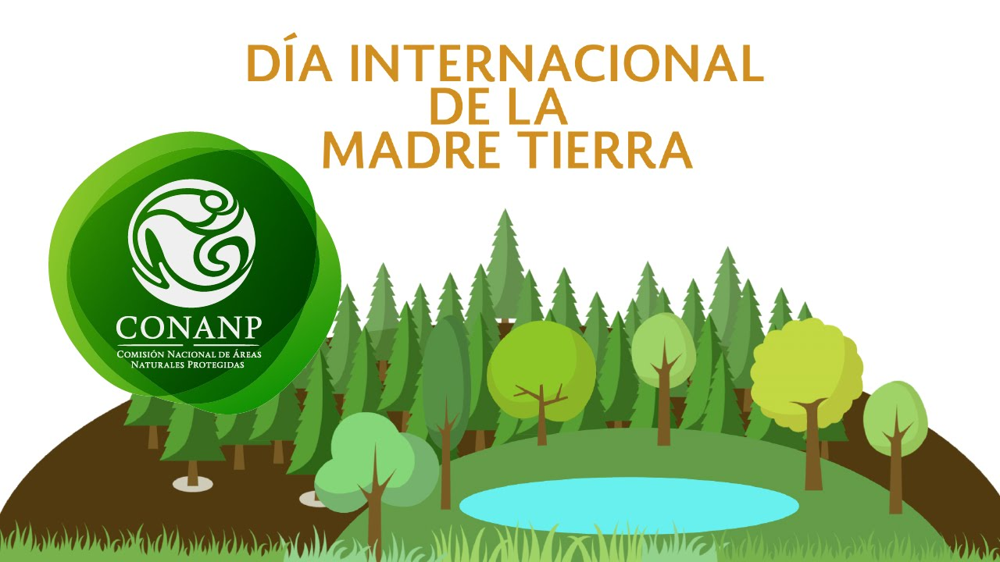
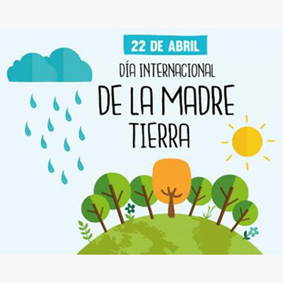
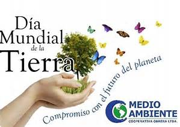
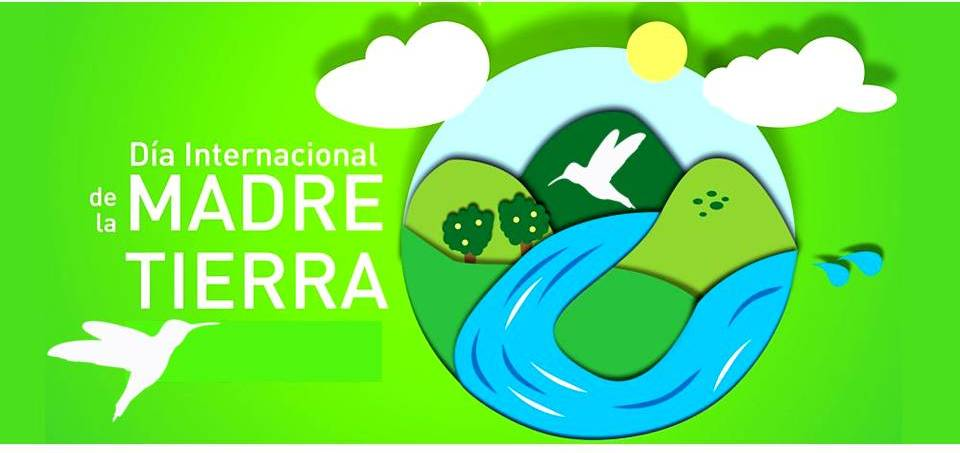
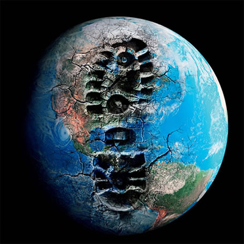
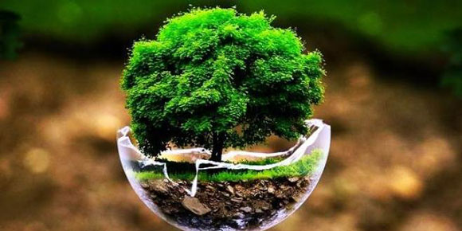

Día Internacional de la Madre Tierra: 22 de Abril

- 

- 
- 


- 
Realizado por:
Cruz Bermúdez Jesus.
4 "F"
Especialidad:
Programación
Submódulo:
Desarrolla Aplicaciones Moviles
Docente:
Lic.José Antonio Gómez Hernández
4 "F"
Desarrolla Aplicaciones Moviles
Lic.José Antonio Gómez Hernández
Celebramos el dia nacional de la Madre Tierra par arecordar que el planeta y sus ecosistemas nos dan la vida y los sustentos. Con este dia, asumimos, la responsabilidad colectiva, como nos recordaba la declaracion de Río de 1992, de formentar esta armonía con la naturaleza y la madre tierra. Este dia nos brinda también la oportunidad de concienciar a todos los habitantes del planeta acerca de los problemas que a afectan a la tierra y a las diferentes formas de vida que en él desarrollan.
En 1968, Morton Hilbert y el U.S. Public Health Service (Servicio de Salud Pública de E.E.U.U.), organizaron el Simposio de Ecología Humana, se realiza una conferencia por los nombrados anteriormente para una asamblea o conferencia medioambiental para que estudiantes escucharan a científicos hablar sobre los efectos del deterioro ambiental en la salud humana. Este fue el primer antecedente del Día de la Tierra. Durante los siguientes dos años, Hilbert y sus estudiantes trabajaron para planear el primer Día de la Tierra. Surgieron otros esfuerzos como Survival Project (Proyecto para la Supervivencia), uno de los primeros eventos educacionales de conciencia ambiental, que fue llevado a cabo en la Universidad Northwestern el 23 de enero de 1970. Este fue el primero de varios eventos realizados en campus universitarios por todo Estados Unidos. Así mismo, Ralph Nader empezó a hablar acerca de la importancia de la ecología en 1970. La primera manifestación tuvo lugar el 22 de abril de 1970, promovida por el senador y activista ambiental Gaylord Nelson, para la creación de una agencia ambiental. En esta convocatoria participaron dos mil universidades, diez mil escuelas (primarias y secundarias) y centenares de comunidades. La presión social tuvo sus logros y el gobierno de los Estados Unidos creó la Environmental Protection Agency (Agencia de Protección Ambiental) y una serie de leyes destinadas a la protección del medio ambiente.

«Madre Tierra» es una expresión común utilizada para referirse al planeta Tierra en diversos países y regiones, lo que demuestra la interdependencia existente entre los seres humanos, las demás especies vivas y el planeta que todos habitamos. La Tierra y sus ecosistemas son nuestro hogar. Para alcanzar un justo equilibrio entre las necesidades económicas, sociales y ambientales de las generaciones presentes y futuras, es necesario promover la armonía con la naturaleza y el planeta.
Celebramos el Día Internacional de la Madre Tierra para recordar que el planeta y sus ecosistemas nos dan la vida y el sustento. Con este día, asumimos, además, la responsabilidad colectiva, como nos recordaba la Declaración de Río de 1992, de fomentar esta armonía con la naturaleza y la Madre Tierra. Este día nos brinda también la oportunidad de concienciar a todos los habitantes del planeta acerca de los problemas que afectan a la Tierra y a las diferentes formas de vida que en él se desarrollan.
Este día nos brinda también la oportunidad de concienciar a todos los habitantes del planeta acerca de los problemas que afectan a la Tierra y a las diferentes formas de vida que en él se desarrollan.

El 13 de Julio del 2001 científicos de cuatro programas internacionales de investigación sobre el cambio global, – el Programa Internacional Geosfera-Biosfera (IGBP), el Programa Internacional de Dimensiones Humanas del Cambio Ambiental Global (IHDP), el Programa Mundial de Investigación Climática (WCRP) y el Programa Internacional de Biodiversidad DIVERSITAS – aprobaron la Declaración de Ámsterdam sobre el Cambio Global la cual dice: “Las actividades humanas están influyendo considerablemente en el medio ambiente de la Tierra en muchos aspectos, además de las emisiones de gases de efecto invernadero y el cambio climático. Los cambios antropogénicos de la superficie terrestre, los océanos, las costas, la atmósfera, la diversidad biológica, el ciclo del agua y los ciclos biogeoquímicos son claramente identificables más allá de la variabilidad natural. Son iguales a algunas de las grandes fuerzas de la naturaleza en su alcance y su impacto. Muchos se están acelerando. El cambio global es real y está ocurriendo ahora.”
La Asamblea General designa en su resolución A/RES/63/278 el 22 de abril como el Día Internacional de la Madre Tierra, teniendo en cuenta que en muchos países se celebra el día de la Tierra, y con el objetivo de alcanzar un justo equilibrio entre las necesidades económicas, las sociales y las ambientales de las generaciones presentes y futuras, y para promover la armonía con la naturaleza y la Tierra. Invita a todos los Estados Miembros, las organizaciones del sistema de las Naciones Unidas, las organizaciones internacionales, regionales y subregionales, la sociedad civil, las organizaciones no gubernamentales y las partes interesadas a observar el Día Internacional de la Madre Tierra y crear conciencia al respecto, según proceda.
La Conferencia de las Naciones Unidas sobre el Medio Humano de 1972 celebrada en Estocolmo sentó las bases de la toma de conciencia mundial sobre la relación de interdependencia entre los seres humanos, otros seres vivos y nuestro planeta. Asimismo, se estableció el 5 de junio como el Día Mundial del Medio Ambiente y se creó el Programa de las Naciones Unidas para el Medio Ambiente PNUMA, la agencia de la ONU encargada de establecer la agenda ambiental a nivel global, promover la implementación coherente de la dimensión ambiental del desarrollo sostenible en el sistema de las Naciones Unidas y actuar como un defensor autorizado del medio ambiente.